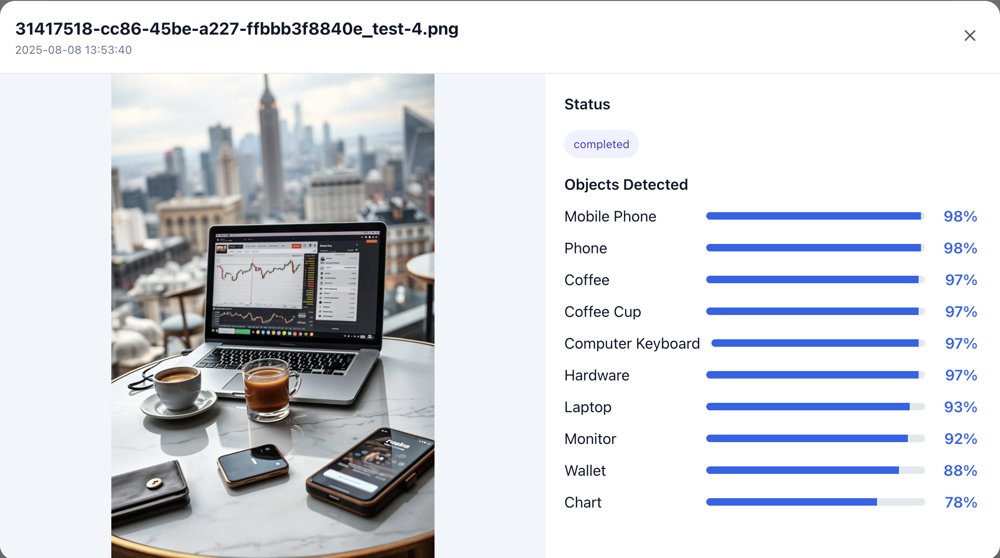
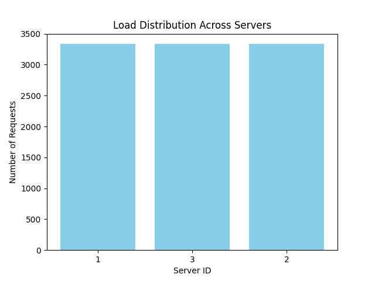
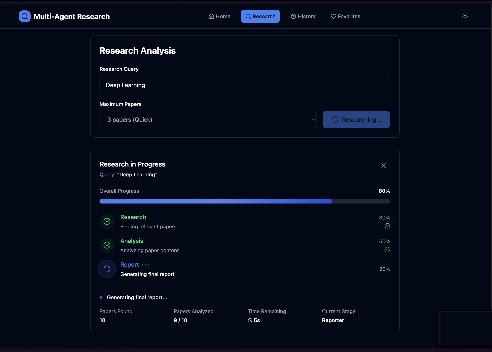

Projects
Showcasing innovative solutions spanning AI, distributed systems, and serverless architecture. These projects demonstrate my expertise in machine learning, full-stack development, and scalable system design.
-

AI Vision Pro - Serverless Image Analysis Platform
A production-ready full-stack serverless application with drag & drop image upload and real-time AI object detection. Built with React, AWS Lambda, S3, DynamoDB, and Rekognition, processing 10+ images simultaneously with 90.6% detection accuracy across 25+ object categories. Features enterprise-grade AWS architecture with auto-scaling capabilities.
GitHub Repository |
Live Demo
-

Customizable Load Balancer
A distributed systems load balancer implementing consistent hashing with virtual servers, automatic failure detection, and dynamic scaling. Engineered with Python, Flask, and Docker to manage 3-6 server replicas, distributing 10K+ async requests at 99.7% uptime. Optimized load distribution efficiency by 35% through enhanced hash functions, reducing response time from 120ms to 78ms.
GitHub Repository
-

Multi-Agent Research Tool
Advanced full-stack research platform with three specialized AI agents (Researcher, Analyzer, Reporter) for automated ArXiv paper analysis. Built with React, TypeScript, FastAPI, and LangChain, featuring real-time WebSocket progress tracking, interactive visualizations, PWA capabilities, and comprehensive export options. Demonstrates cutting-edge multi-agent AI architecture and seamless user experience design.
GitHub Repository |
Live Demo